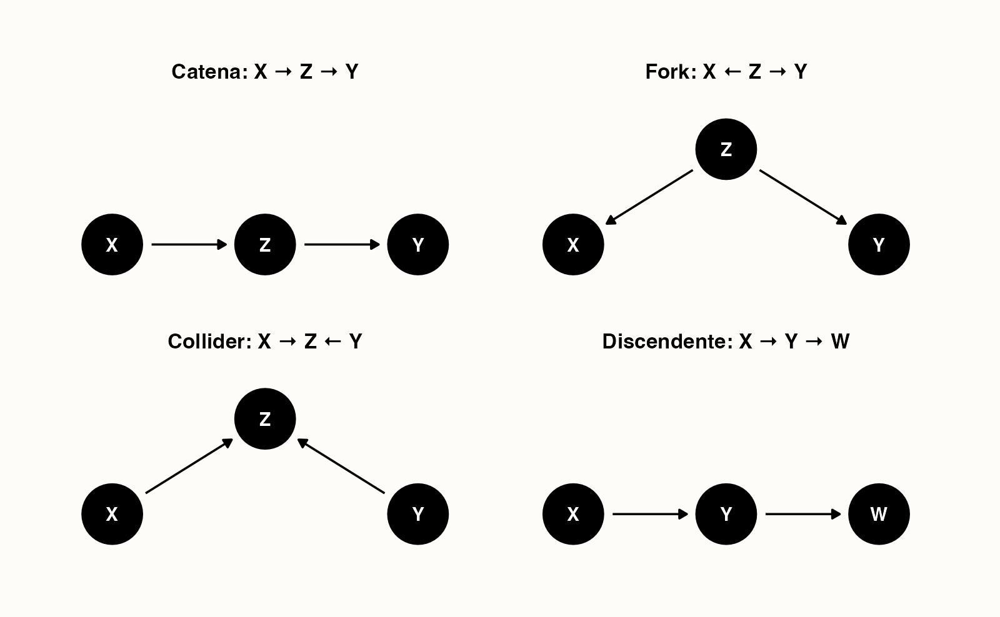

here::here("code", "_common.R") |>
source()
conflicts_prefer(ggplot2::theme_void)22 Causalità dai dati osservazionali
“To understand causation is not merely to describe regularities, but to imagine what would happen under interventions.”
– Judea Pearl, Causality (2009)
Introduzione
Quando in psicologia ci chiediamo perché un fenomeno si verifica, stiamo entrando nel territorio della causalità. Per esempio: l’esposizione a situazioni di stress causa davvero un aumento dei sintomi depressivi? Oppure si tratta solo di una correlazione, magari dovuta a un terzo fattore che non abbiamo considerato?
Questa distinzione tra correlazione e causalità è fondamentale:
- la correlazione ci dice che due variabili variano insieme;
- la causalità implica invece che una variabile produce un cambiamento nell’altra.
In psicologia e nelle scienze sociali non possiamo quasi mai fare esperimenti perfettamente controllati, come avviene in laboratorio nelle scienze naturali. Per questo motivo, abbiamo bisogno di strumenti teorici e statistici che ci aiutino a ragionare in termini causali anche quando i dati provengono da studi osservativi.
Panoramica del capitolo
- Il problema della causalità in assenza di esperimenti.
- I quattro confondenti fondamentali (catena, biforcazione, collider, discendente).
- Le inferenze dai dati osservazionali.
22.1 Il ruolo dei modelli
Immaginiamo di osservare che studenti che dormono poco tendono a riportare più ansia. Possiamo dire che dormire poco causa ansia? Oppure è possibile che l’ansia causi insonnia? O magari entrambe le variabili sono influenzate da un terzo fattore, ad esempio periodi di esami universitari? Questo semplice esempio mostra che i dati da soli non bastano: dobbiamo avere un modello teorico che ci guidi nell’interpretazione.
I modelli statistici ci aiutano a formalizzare queste ipotesi causali:
- un modello puramente descrittivo si limita a dire che due variabili sono associate;
- un modello causale, invece, esplicita ipotesi su come e perché una variabile influenza un’altra.
Lo scopo di questo capitolo è introdurre alcuni strumenti concettuali di base per distinguere tra correlazione e causalità e per capire come i modelli possano essere usati in psicologia per affrontare domande causali.
22.2 Correlazione non significa causalità
Uno degli errori più comuni in psicologia è confondere la correlazione con la causalità. Se due variabili si muovono insieme, non significa necessariamente che una sia la causa dell’altra.
22.2.1 Esempio classico
Supponiamo di osservare che, durante l’estate, aumenta sia il consumo di gelati sia il numero di persone che hanno colpi di calore. È forse il consumo di gelati a causare i colpi di calore? Oppure sono i colpi di calore a spingere le persone a mangiare più gelati? La risposta, ovviamente, è che entrambe le variabili sono influenzate da un fattore esterno: la temperatura. Il caldo estivo aumenta sia la voglia di gelato sia il rischio di colpo di calore.
22.2.2 Un esempio psicologico
Durante i periodi d’esame universitari aumentano sia lo stress sia i disturbi del sonno. Dobbiamo concludere che lo stress causa direttamente insonnia? Oppure che l’insonnia genera stress? La spiegazione più plausibile è che entrambe le variabili dipendano da un fattore esterno comune: la pressione del contesto degli esami.
Questa situazione, in cui due variabili sono legate da una causa comune, si chiama confondimento.
22.2.3 Perché è importante in psicologia
Negli studi psicologici, spesso osserviamo correlazioni interessanti: ad esempio, tra uso dei social media e benessere psicologico. Ma senza un modello causale, non possiamo dire se:
- sono i social media a ridurre il benessere,
- se chi ha meno benessere tende a usare di più i social,
- oppure se entrambe le cose dipendono da un terzo fattore, come la solitudine.
22.2.4 La lezione da ricordare
La correlazione è un punto di partenza utile, ma non basta per stabilire una relazione di causa-effetto. Per andare oltre, dobbiamo introdurre strumenti che ci aiutino a rappresentare e testare ipotesi causali, come vedremo nelle sezioni successive.
22.3 Rappresentare le relazioni causali
Per ragionare in modo chiaro sulle relazioni di causa-effetto è utile avere un linguaggio formale. Uno degli strumenti più potenti a questo scopo è rappresentare le relazioni tra variabili con un grafo causale.
22.3.1 Che cos’è un grafo causale
Un grafo causale è un diagramma formato da:
-
nodi, che rappresentano le variabili di interesse (ad esempio: stress, ansia, sonno);
- frecce, che indicano ipotesi di influenza causale (ad esempio: lo stress → ansia).
Questi grafi non sono semplici figure illustrative: sono veri e propri modelli che esplicitano le nostre ipotesi su come le variabili si influenzano.
22.3.2 Un esempio psicologico
Immaginiamo di voler studiare il legame tra stress e rendimento universitario. Possiamo proporre un grafo causale come questo:
- Stress → Qualità del sonno → Rendimento agli esami
Qui stiamo ipotizzando che lo stress riduca la qualità del sonno, e che a sua volta un sonno peggiore abbassi il rendimento. In altre parole, il sonno agisce da variabile mediatore.
22.3.3 Perché è utile
Rappresentare i dati in questo modo ci permette di:
- distinguere tra relazioni dirette e indirette.
- chiarire il ruolo di possibili variabili di confondimento.
- progettare meglio i nostri studi (per esempio, decidere quali variabili misurare per testare una certa ipotesi).
22.3.4 Un avvertimento
Un grafo causale non ci dice automaticamente quale ipotesi è vera: rappresenta solo ciò che crediamo sia plausibile. Sta poi ai dati e alle analisi statistiche confermare o mettere in discussione queste ipotesi.
22.4 Confondimento, mediazione e altre relazioni causali
Nei modelli causali non tutte le variabili hanno lo stesso ruolo. È importante distinguere tra diversi tipi di relazioni, perché ognuna porta a interpretazioni diverse.
22.4.1 Variabili di confondimento
Una variabile di confondimento è una variabile che influenza sia la presunta causa sia l’effetto. Se non la consideriamo, rischiamo di attribuire una relazione causale dove in realtà non c’è.
Esempio. Osserviamo che gli studenti che usano più spesso i social media riportano più sintomi depressivi. Potremmo pensare che siano i social media a causare depressione. Ma un possibile confondente è la solitudine: gli studenti più soli potrebbero usare di più i social e allo stesso tempo sentirsi più depressi. Se non teniamo conto della solitudine, rischiamo di trarre conclusioni errate.
22.4.2 Variabili mediatrici
Una variabile mediatrice è invece un “anello di passaggio” nella catena causale. Non distorce la relazione, ma la spiega.
Esempio. Stress → Qualità del sonno → Ansia. Qui il sonno media l’effetto dello stress sull’ansia: lo stress peggiora il sonno, e il cattivo sonno aumenta l’ansia.
22.4.3 Variabili moderatrici
Un’altra distinzione utile è quella delle variabili moderatrici: fattori che non spiegano la relazione, ma ne modificano la forza o la direzione.
Esempio. L’effetto dello stress sull’ansia potrebbe essere più forte negli studenti al primo anno rispetto a quelli degli anni successivi. Qui l’“anno di corso” agisce da moderatore.
Capire se una variabile è un confondente, un mediatore o un moderatore è fondamentale per interpretare correttamente i dati psicologici e per costruire modelli causali realistici.
22.4.4 Le quattro configurazioni fondamentali nei DAG
Per capire bene come funzionano i grafi causali, è utile conoscere le quattro strutture di base con cui due variabili possono essere collegate attraverso una terza.
-
Catena (chain)
\(X \rightarrow Z \rightarrow Y\)
Qui \(Z\) è un mediatore: trasmette l’effetto di \(X\) su \(Y\).- Se non controlliamo per \(Z\), \(X\) e \(Y\) appaiono correlati.
- Se controlliamo per \(Z\), l’effetto di \(X\) su \(Y\) “scompare”, perché passa interamente da \(Z\).
- Se non controlliamo per \(Z\), \(X\) e \(Y\) appaiono correlati.
-
Biforcazione (fork)
\(X \leftarrow Z \rightarrow Y\)
Qui \(Z\) è un confondente: causa sia \(X\) che \(Y\).- Se non controlliamo per \(Z\), vediamo una correlazione spuriosa tra \(X\) e \(Y\).
- Se controlliamo per \(Z\), la correlazione spuria scompare.
- Se non controlliamo per \(Z\), vediamo una correlazione spuriosa tra \(X\) e \(Y\).
-
Collider
\(X \rightarrow Z \leftarrow Y\)
Qui \(Z\) è un effetto comune di \(X\) e \(Y\).- Se non controlliamo per \(Z\), \(X\) e \(Y\) sono indipendenti.
- Se invece controlliamo per \(Z\) (o per un suo discendente), creiamo artificialmente una correlazione spuriosa.
- Se non controlliamo per \(Z\), \(X\) e \(Y\) sono indipendenti.
-
Discendente
\(X \rightarrow Y \rightarrow Z\)
Qui \(Z\) è un discendente di \(Y\): porta informazioni sull’effetto di \(X\), ma non va confuso con un confondente.- Controllare un discendente può introdurre bias, perché significa “tagliare” il percorso naturale della causalità.
22.4.4.1 Perché è importante
Queste quattro configurazioni sono le “mattonelle di base” con cui si costruiscono tutti i DAG più complessi. Capire quando conviene controllare una variabile (catena, fork) e quando invece non bisogna farlo (collider, discendente) è essenziale per evitare errori nell’inferenza causale.
22.5 Dai grafi causali all’inferenza statistica
Finora abbiamo visto che i grafi causali servono a rappresentare le nostre ipotesi. Ma come possiamo collegarli ai dati e verificare se un modello causale è plausibile?
22.5.1 Indipendenze e dipendenze
Un’idea chiave è che un grafo causale non descrive solo “chi influenza chi”, ma implica anche certe relazioni di indipendenza tra le variabili.
Queste relazioni sono importanti perché ci permettono di confrontare il grafo con i dati: se le indipendenze predette non si verificano, il grafo non può essere corretto.
22.5.1.1 Esempio 1: Catena (mediazione)
Supponiamo di ipotizzare che: Stress → Sonno → Ansia. Qui il sonno media l’effetto dello stress sull’ansia. Se non conosciamo il livello di sonno, stress e ansia risulteranno correlati. Ma condizionando sul sonno, lo stress non ci dà più informazioni aggiuntive sull’ansia.
In termini statistici:
\[ \text{Ansia} \;\perp\!\!\!\perp\; \text{Stress} \mid \text{Sonno} \]
22.5.1.2 Esempio 2: Fork (causa comune)
Consideriamo ora: Sonno → Stress; Sonno → Ansia. Qui il sonno è un confondente: influenza sia stress che ansia. Se non controlliamo per il sonno, vediamo una correlazione spuriosa tra stress e ansia. Se invece condizioniamo sul sonno, questa correlazione scompare.
Formalmente anche qui:
\[ \text{Ansia} \;\perp\!\!\!\perp\; \text{Stress} \mid \text{Sonno} \]
22.5.1.3 Esempio 3: Collider (effetto comune)
Ora immaginiamo: Stress → Ansia ← Sonno. Qui l’ansia è un collider, cioè un effetto comune di stress e sonno. In questo caso accade l’opposto:
- senza condizionare su ansia, stress e sonno sono indipendenti;
- se invece controlliamo per ansia (o per una sua conseguenza), introduciamo artificialmente una correlazione spuriosa.
Formalmente:
\[ \text{Stress} \;\perp\!\!\!\perp\; \text{Sonno} \quad \text{ma non} \quad \text{Stress} \;\perp\!\!\!\perp\; \text{Sonno} \mid \text{Ansia} \]
22.5.2 Tabella riassuntiva
| Struttura | Forma | Relazione tra \(X\) e \(Y\) | Dopo aver controllato \(Z\) |
|---|---|---|---|
| Catena (mediazione) | \(X \to Z \to Y\) | Dipendenti | Indipendenti |
| Fork (causa comune) | \(X \leftarrow Z \to Y\) | Dipendenti (spuria) | Indipendenti |
| Collider (effetto comune) | \(X \to Z \leftarrow Y\) | Indipendenti | Dipendenti (spuri) |
22.5.3 Le quattro configurazioni nei DAG
Di seguito trovi quattro figure minime che illustrano Catena, Fork, Collider e Discendente.

22.5.4 Perché è importante
Questi esempi mostrano che il significato di indipendenza condizionata dipende dalla struttura del grafo. In pratica:
- con catene e fork, condizionare “rompe” la correlazione;
- con i collider, condizionare la crea.
Sapere in quali casi conviene controllare una variabile e in quali no è essenziale per fare inferenza causale corretta.
22.5.5 Come si verifica l’indipendenza condizionata?
Con i dati, possiamo testare questa ipotesi in diversi modi:
-
Correlazioni parziali: calcoliamo la correlazione tra stress e ansia tenendo costante il sonno.
Se il modello è corretto, questa correlazione dovrebbe essere vicina a zero.
-
Regressioni multiple: stimiamo una regressione dell’ansia sia sullo stress che sul sonno.
Se il grafo è corretto, una volta incluso il sonno nel modello, lo stress non dovrebbe più avere un effetto sull’ansia.
- Test di indipendenza condizionata (nei metodi più avanzati): procedure statistiche apposite che verificano se due variabili sono indipendenti, dati certi controlli.
22.5.6 Perché è importante
Questo collegamento tra grafi causali e indipendenze nei dati è il cuore dell’inferenza causale:
- i grafi rappresentano le nostre ipotesi teoriche,
- le indipendenze condizionali ci dicono se i dati sono compatibili con quelle ipotesi.
Se un grafo predice un’indipendenza che nei dati non si verifica, dobbiamo concludere che il grafo (cioè la nostra ipotesi causale) è sbagliato o incompleto.
22.5.7 Da ricordare
Quando diciamo che servono metodi statistici appropriati, intendiamo proprio questi strumenti (correlazioni parziali, regressioni multiple, test di indipendenza) che ci permettono di confrontare le previsioni del grafo con i dati. In questo modo, il linguaggio dei DAG non resta un esercizio astratto, ma diventa un ponte concreto tra teoria psicologica e analisi empirica. In pratica, per gli psicologi, questo significa imparare a usare strumenti come regressioni multiple, correlazioni parziali e modelli di equazioni strutturali: tutti metodi che mettono alla prova le previsioni implicite dei grafi causali.
22.6 Come studiare la causalità in psicologia
Abbiamo visto che i grafi causali aiutano a rappresentare le ipotesi e che i dati possono confermarle o metterle in dubbio. Ma come si fa, concretamente, a studiare la causalità in psicologia?
22.6.1 Esperimenti controllati
Il metodo più forte per stabilire una relazione causale è l’esperimento. In un esperimento:
- i partecipanti vengono assegnati in modo casuale a due o più gruppi (randomizzazione);
- solo alcuni gruppi ricevono la manipolazione sperimentale (per esempio: una tecnica di rilassamento);
- si confrontano i risultati nei diversi gruppi.
Grazie alla randomizzazione, eventuali differenze iniziali tra i gruppi vengono “bilanciate”. In questo modo, se emergono differenze negli esiti, possiamo attribuirle con buona sicurezza alla manipolazione.
22.6.2 Quasi-esperimenti
Spesso però, in psicologia, non possiamo randomizzare i partecipanti. Per esempio: non possiamo decidere chi subisce un trauma o chi sviluppa un disturbo. In questi casi si ricorre ai quasi-esperimenti, in cui cerchiamo di avvicinarci il più possibile alla logica sperimentale usando:
- gruppi di confronto selezionati con attenzione,
- misure ripetute prima e dopo un evento,
- tecniche statistiche per ridurre le differenze iniziali tra gruppi.
22.6.3 Studi osservativi
Infine, gran parte della ricerca psicologica si basa su studi osservativi, in cui registriamo ciò che accade naturalmente, senza manipolare nulla. Qui il problema del confondimento è particolarmente serio: dobbiamo usare modelli statistici e controlli accurati per cercare di distinguere tra correlazione e causalità.
In sintesi, possiamo dire che:
- gli esperimenti sono lo strumento più solido per l’inferenza causale,
- i quasi-esperimenti sono un compromesso utile quando la randomizzazione non è possibile,
- gli studi osservativi richiedono grande cautela e modelli ben costruiti per trarre conclusioni causali.
22.7 Strategie statistiche per affrontare il confondimento
Quando non possiamo condurre esperimenti, dobbiamo cercare di “imitare” le condizioni sperimentali con strumenti statistici. Queste tecniche non eliminano del tutto il problema del confondimento, ma ci aiutano a ridurne l’impatto.
22.7.1 Regressione
Il metodo più semplice e diffuso è la regressione. Inserendo nella regressione variabili che potrebbero agire come confondenti, possiamo stimare l’effetto di una variabile indipendente “a parità di” altre condizioni.
Esempio: se vogliamo studiare l’effetto dell’uso dei social media sul benessere psicologico, possiamo includere anche la solitudine come predittore. In questo modo, l’effetto stimato dei social media sarà corretto per le differenze di solitudine tra le persone.
22.7.2 Matching
Un’altra strategia è il matching: si confrontano persone simili tra loro per tutte le caratteristiche rilevanti, tranne che per la variabile di interesse. Per esempio, possiamo confrontare studenti che usano molto i social con altri che li usano poco, ma che sono simili per età, genere, rendimento scolastico e livello di solitudine.
22.7.3 Variabili strumentali
Quando una variabile di confondimento non è osservata o non può essere misurata, anche i metodi di regressione non bastano. In questi casi, una possibile strategia è usare una variabile strumentale (IV, instrumental variable).
22.7.3.1 Cos’è una variabile strumentale?
Una variabile \(Z\) è un buon strumento per stimare l’effetto di \(X\) su \(Y\) se rispetta due condizioni:
-
Rilevanza: \(Z\) influenza \(X\).
- Esogeneità: \(Z\) non influenza \(Y\) direttamente, né è correlata con i confondenti di \(X\) e \(Y\).
In altre parole, lo strumento agisce come una “fonte di variazione casuale” di \(X\), che possiamo sfruttare per stimare il suo effetto su \(Y\).
22.7.3.2 Perché serve?
Immagina di voler stimare l’effetto delle ore di sonno (\(X\)) sul rendimento a un test (\(Y\)). Il problema è che la motivazione (\(U\)) è un confondente: studenti più motivati tendono a dormire meglio e a ottenere voti più alti. Se non possiamo misurare la motivazione, la regressione non ci aiuta.
22.7.3.3 Come interviene lo strumento
Supponiamo di scoprire che il rumore notturno vicino alla residenza universitaria (\(Z\)) influenza quante ore di sonno gli studenti riescono a fare (\(X\)), ma non influisce direttamente sul loro rendimento (\(Y\)).
-
\(Z\) → influenza il sonno (\(X\)).
- \(Z\) non ha effetti diretti su rendimento, né è legato alla motivazione (\(U\)).
In questo caso, il rumore agisce come strumento: possiamo usare la variazione di sonno “indotta dal rumore” per stimare l’effetto causale del sonno sul rendimento.
22.7.3.4 Da ricordare
- Le variabili strumentali sono molto potenti, ma difficili da trovare: serve una variabile che influenzi solo la causa e non l’effetto.
- Quando c’è, però, ci permette di “simulare” un esperimento naturale, isolando una fonte quasi-casuale di variazione nella variabile di interesse.
Nella pratica psicologica, strumenti così puliti sono rari: l’idea serve più a capire il principio che a trovare sempre uno strumento perfetto.
Queste tecniche non sostituiscono l’esperimento, ma rappresentano strumenti preziosi per trarre conclusioni causali quando siamo limitati a dati osservativi.
22.8 Un esempio numerico di confondimento
Immaginiamo di voler stimare se lo studio pomeridiano (\(X\)) migliora il rendimento a un test (\(Y\)). Supponiamo però che esista una variabile di confondimento: la motivazione (\(U\)).
- Gli studenti molto motivati tendono sia a studiare più spesso nel pomeriggio (\(X\)), sia ad avere voti più alti (\(Y\)).
- Se non controlliamo per la motivazione, potremmo concludere che il semplice studiare nel pomeriggio causi voti migliori.
Ecco dei dati simulati:
set.seed(123)
n <- 200
motivazione <- rbinom(n, 1, 0.5) # 0 = bassa, 1 = alta
studio <- rbinom(n, 1, 0.3 + 0.4*motivazione) # più motivati studiano più spesso
rendimento <- rbinom(n, 1, 0.2 + 0.5*motivazione) # motivazione influenza il voto
table(studio, rendimento)
#> rendimento
#> studio 0 1
#> 0 52 43
#> 1 45 60Se confrontiamo il rendimento senza considerare la motivazione, otteniamo:
prop.table(table(studio, rendimento), 1)
#> rendimento
#> studio 0 1
#> 0 0.547 0.453
#> 1 0.429 0.571Sembra che chi studia nel pomeriggio abbia risultati migliori. Ma in realtà, l’effetto non dipende dallo studio, bensì dalla motivazione, che è il vero fattore causale. Solo controllando per \(U\) (ad esempio con una regressione) possiamo separare l’effetto reale da quello spurio.
22.8.1 Cosa impariamo
Questo esempio numerico mostra in pratica ciò che i DAG ci aiutano a visualizzare:
- quando esiste una variabile di confondimento (come la motivazione), si crea un percorso “indiretto” tra la causa ipotizzata (\(X\), lo studio) e l’effetto (\(Y\), il rendimento);
- questo percorso indiretto può dare l’illusione di un effetto causale anche quando non c’è.
In letteratura, questi percorsi indesiderati sono chiamati percorsi back-door: collegamenti che partono “da dietro” la variabile di interesse (\(X\)) e portano a \(Y\) passando per un’altra variabile.
Per ottenere una stima corretta dell’effetto causale, dobbiamo bloccare questi percorsi, cioè tenerne conto nell’analisi. Possiamo farlo in diversi modi:
- includendo la variabile di confondimento in una regressione,
- selezionando gruppi di confronto simili (matching),
- oppure, idealmente, usando la randomizzazione sperimentale, che rende i gruppi equivalenti su fattori non osservati.
In sintesi: senza controllare per la motivazione, i dati ci ingannano; includendo la motivazione, possiamo distinguere tra correlazione spuria e relazione causale reale.
Riflessioni conclusive
Studiare la causalità non è solo un esercizio teorico. Ogni volta che uno psicologo legge un articolo, progetta un esperimento o valuta un trattamento, deve chiedersi: ‘Questa relazione che osservo è davvero causale o è il frutto di un confondimento?’ Imparare a distinguere questi casi significa fare scienza psicologica più solida e utile.
In questo capitolo abbiamo visto che studiare la causalità in psicologia è complesso, ma non impossibile. Abbiamo distinto tra correlazione e causalità, imparato a rappresentare le nostre ipotesi con i grafi causali, e discusso il ruolo di concetti come confondimento, mediazione e moderazione.
Abbiamo poi esaminato i principali strumenti per testare le ipotesi causali:
-
esperimenti controllati, il metodo più solido,
-
quasi-esperimenti, utili quando non possiamo randomizzare,
- studi osservativi, che richiedono l’uso di tecniche statistiche per ridurre i rischi di interpretazioni errate.
La lezione principale è che i dati, da soli, non “parlano”: hanno bisogno di un modello teorico che guidi l’interpretazione. Un’analisi statistica, per quanto sofisticata, non può dirci nulla di causale se non abbiamo prima formulato ipotesi chiare sul meccanismo che vogliamo studiare.
Bibliografia
Alexander, R. (2023). Telling Stories with Data: With Applications in R. Chapman; Hall/CRC.
Byrnes, J. E., & Dee, L. E. (2024). Causal inference with observational data and unobserved confounding variables. bioRxiv, 2024–2002.
Riederer, E. (2021). Causal design patterns for data analysts. https://emilyriederer.netlify.app/post/causal-design-patterns/